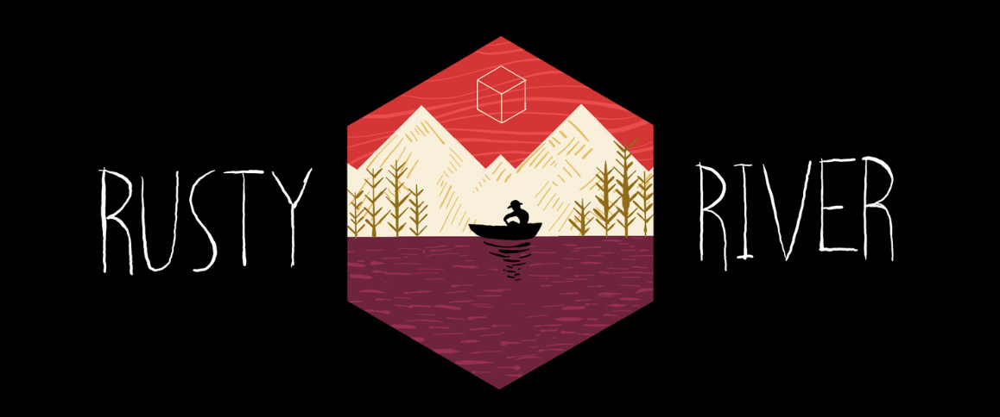
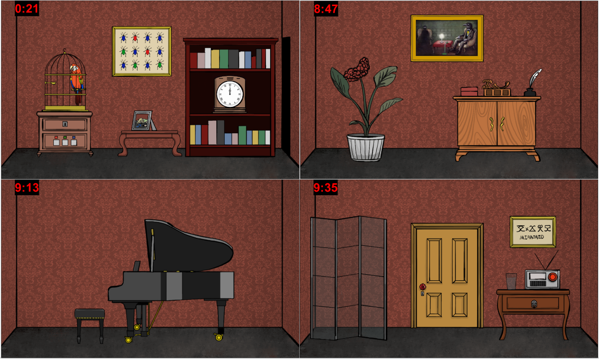

Inspired by Rusty Lake, my team(Alvin Li, Eileen Zhang, Connor Wong) and I created a similar thriller styled escape room game in Java using Greenfoot. The game was built through object oriented programming and utilized many data structures such as linked list, queues and stacks.
Additionally, 98% of the graphics used in this game were created originally by me!

In the game, players use the arrow keys to navigate around the room, carefully observing the four walls of the room looking for hints and objects to interact with.

The players click on opjects to zoom or interact with it. They press "I" to toggle on/off the inventory bar, from which they can use collected tools to help them solve puzzles.